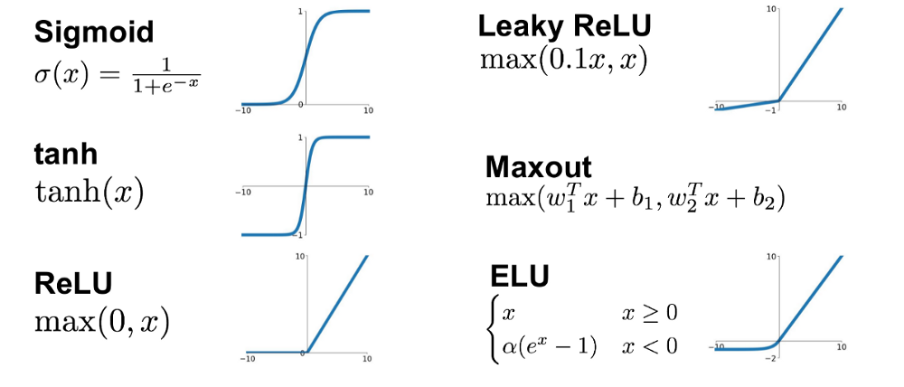
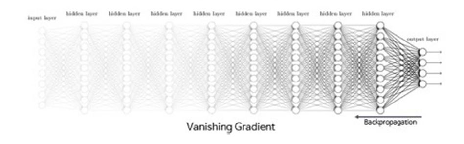
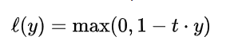
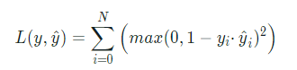
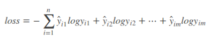
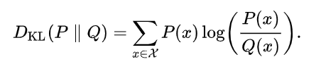
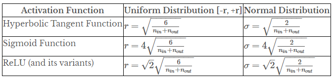
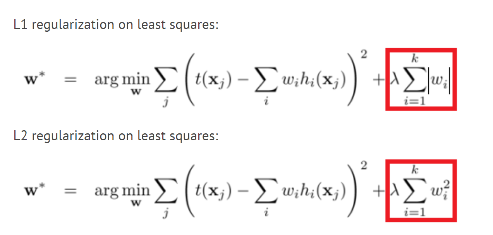

Sieci Neuronowe
Neuron
- Struktura wzorowana na budowie biologicznego neuronu
- Dowolna liczba wejść z różną wagą
- Jedno wyjście
Wyjście to wynik funkcji aktywacji dla sumy ważonej wejść:
\(Y = f(\sum_{i=1}^{n} W_i*X_i)\)

Funkcja aktywacji
Powinna być nieliniowa, aby wyjście nie było kombinacją liniową wejść. 
Multi Layer Perceptron - Budowa
Budowa MLP polega na zgrupowaniu neuronów w warstwy.
- Wszystkie neurony w jednej warstwie mają tyle samo wejść.
- Wyjście neuronu jest wejściem dla każdego neuronu w kolejnej warstwie.
\(WC_i\) - Liczba wag w warstwie \(i\)
\(N_i\) - liczba neuronów w warstwie i
\(WC_i\) = \(N_i*N_{i-1}\) dla \(i\gt1\)
\(WC_i\) = \(N_i\) dla \(i=1\)

Backpropagation
Celem szkolenia jest zminimaliozwanie funkcji kosztu: \(C(w_1, w_2, ..., w_M) =\) np. błąd średniokwadratowy
Wyznaczenie gradientu \(\nabla C = [\frac{dC}{dw_1}, \frac{dC}{dw_2}, ..., \frac{dC}{dw_M}]\) pozwoli na dostosowanie wag i zmniejszenie błędu.
Aby wyznaczyć elementy wektora \(\nabla C\) stosuje się algorytm propagacji wstecznej.
Konceptualnie jest to po prostu liczenie pochodnych po różnych wagach przy użyciu reguły łańcuchowej.
Przykłady
- \(x\) i \(y\) to stałe wektory o równych wymiarach
- \(C(y, f^N(W^Nf^{N-1}(W^{N-1}...f^1(W^x))))\) to funkcja kosztu, zmiennymi są wagi
- \(W^i\) to macierz wag w i-tej warstwie
- \(W^i_j\) to wektor wag wejściowych w i-tej warstwie dla j-tego neuronu
- \(z^i_j\) to nieaktywowane wyjście j-tego neuronu w i-tej warstwie
- \(a^i_j = f(z^i_j)\)
Przykłady:
- \(\frac{dC}{dW^N_j} = \frac{dC}{da^N}\frac{da^N}{dz^N}\frac{dz^N}{dW^N_j}\)
- \(\frac{dC}{dW^{N-1}_j} = \frac{dC}{da^N}\frac{da^N}{dz^N}\frac{dz^N}{da^{N-1}}\frac{da^{N-1}}{dz^{N-1}}\frac{dz^{N-1}}{dW^{N-1}_j}\)
Vanishing gradient problem
- Wartości gradientów w pierwszych warstawch sieci osiągają bardzo małe wartości, przez co prawie się nie zmieniają.
- Wynika to z tego, że podczas liczenia pochodnych z użyciem reguły łańcuchowej mnożymy wiele małych wartości.
Rozwiązania: Batch Normalization, użycie funkcji aktywacji, które nie skutkują małymi pochodnymi.

Metody uczenia
- SGD - Stochastic Gradient Descent
- Gradient jest liczony dla każdej próbki z osobna, a nie całego zbioru danych na raz
- Przyspiesza czas szkolenia
- SGD with momentum
- Przy liczeniu gradientu brana jest pod uwagę uśredniona wartość z wielu poprzednich aktualizacji lub tylko poprzednia aktualizacja.
- Nie modyfikujemy stałej uczenia \(\alpha\)
- Parametr \(\beta\) określa wagę poprzednich aktualizacji
- Nowa wartość:
- \(j\) - indeks wagi
- \(i\) - iteracja
- \(\Delta w_j^{i}=\beta \Delta w_{j}^{i-1}+\alpha \frac{dC}{dw_j}\)
RMSProp
- Wykorzystuje średnią z przeszłych gradientów do dostoswanie stałej uczenia \(\alpha\)
- Nowa wartość:
- \(v_j\) - średnia kwadratowa poprzednich gradientów
- \(\Delta w_j=\frac{\alpha}{\sqrt{v_j}}\frac{dC}{dw_j}\)
- ADAM
- Połączenie RMSProp i SGD with momentum
- Uwzględniamy poprzednie aktualizacje oraz dostosowujemy stałą uczenia \(\alpha\)
- Nestorov
- Podobna do SGD with momentum
- Wagi są aktualizowane zgodnie z pędem i dopiero wtedy liczony jest kolejny gradient
Loss functions
- Klasyfiaktory binarne
Binary Cross-Entropy

Hinge loss

Squared Hinge Loss

Klasyfikatory wieloklasowe
Categorical Cross-Entropy

- Kullback-Leibler divergence(relative entropy)
Pozwala na porónwanie dwóch rozkładów prawdopodobieństwa.

Inicjalizacja wag
- Dobra inicjalizacja wag pomaga zredukować Vanishing Gradient Problem.
- Kilka ważnych cech:
- Wagi nie powinny być małe
- Wagi nie powinny być takie same
- Wagi powinny mieć wysoką wariancję
- Wybór metody inicjalizacja zależny od użytych funkcji aktywacji
- Pod uwagę brana ilość wejść/wyjść w wartswie.

Stała uczenia
- Określa jak duży krok wykonywany jest przy aktualizacji wag.
- Learning rate decay - wraz z liczbą epok zmniejsza się stałą uczenia.
- Pozwala na zmniejszenie szansy na 'przeskoczenie' minimum
- Przypomina simulated annealing

Batch normalization
- Normalizacja polega na przeskalowaniu cech na ten sam przedział. Najczęście na [0; 1].
- Batch normalization działa tak samo jak normalizacja danych wejściowych, z tym że znajduje się pomiędzy warstwami.
- Co daje batch normalization?
- Przestrzeń wejść jest bardziej symetryczna - można używać wyższych stałych uczenia
- Zmniejsza istotność wag początkowych.

Regularyzacja
- Celem regularyzacji jest zmniejszenie overfittingu.
- Innymi słowy: staramy się zwiększyć bias i zmniejszyć wariancję na zbiorze treningowym.
- Poświęcamy dokładność na zbiorze treningowym licząc na otrzymanie lepiej generalizującego modelu.
Regularyzacja Dropout
Przypisujemy dla warstwy pewne prawdopodobieństwo pominięcia neuronu.
Pominięte neurony nie biorą udziału w danej iteracji gradient descent.
Regularyzacja L1 i L2 Polegają na dodaniu pewnego wyrażenia regularyzującego do funkcji kosztu.

- Regularyzacja przez augmentację
- Polega na wygenerowaniu nowych danych treningowych na podstawie już posiadanych.
- Zwiększanie ilości danych zmniejsza wariancję i zwiększa bias.
Sieci konwolucyjne - budowa
Sieci konwolucyjne - uczenie
Opis scikitlearn
Keras
PyTorch
Dziękujemy
Zespół
- Andrzej Ratajczak
- Damian Wasilenko
- Dawid Macek
- Mirosław Błażej